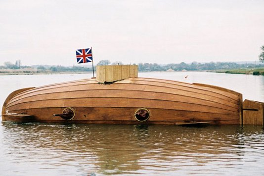

Barca cosaca del siglo XVII llamada Chaika (gaviota), usada para reconocimiento e infiltración, se teoriza que era una campana submarina.
Se cree que Jerónimo de Ayanz y Beaumont, el olvidado ingeniero español que registró la primera patente sobre una máquina de vapor, ya había construido un submarino en 1600.

El primer sumergible del que se tiene información fiable se construyó en 1620 por Cornelius Jacobszoon Drebbel, un holandés al servicio de Jaime I de Inglaterra y estaba propulsado por medio de remos.